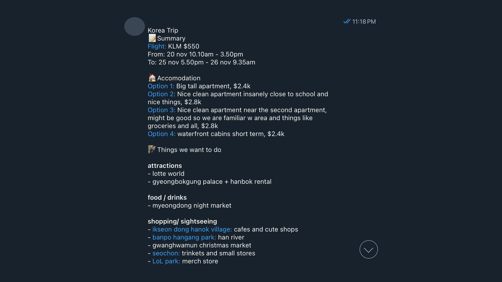
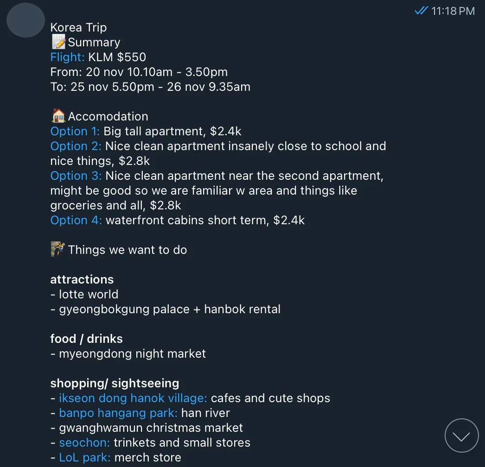

Telegram Bot for Trip Planning
A collaboration between NUS Fintech Society and HeyMax to facilitate trip planning in Telegram group chats by turning scattered travel links into a structured, AI-generated trip summary and interactive map.
- Role
- Software Developer
- Timeline
- Aug 2025 — May 2026
- Team
- Sub-team of 2, whole team of 8
- Tools
-
 Python
Leaflet.js
Apify
Dify
n8n
Python
Leaflet.js
Apify
Dify
n8n

The problem
Trip Planning breaks in the chat
Young adults, especially university students, usually plan trips on Telegram. Telegram does not have specialised features for trip planning, leading to fragmented and time-consuming collaboration.
This product direction prioritizes low-friction adoption by embedding planning tools into existing group-chat behavior. Instead of asking users to migrate tools, the bot turns current chat activity into structured travel planning artifacts.
The solution
Meet users where they already coordinate: inside Telegram, not another standalone planner app.
A command-led bot with LLM summarisation
Unstructured messages are transformed into travel planning artefacts: a comprehensive summary message embedded with links and an AI-generated short description of places, accommodations, and activities.
Key features
- Pre-processing user query: The bot asks contextual questions to personalise and enhance the accuracy of the summarised plan.
- Content Analysis: The bot utilises API calls from various platforms to detect destinations, points of interest, activities, accommodation options, and themes from social media content shared in the chat. By converting raw inspiration into machine-readable data, accuracy is ensured across the workflow and output message.
- Summary message generation: After data extraction, AI gives a structured, group-ready trip overview.
- Trip Overview: A clear summary of the trip, including flights, overall duration, and key timings.
- Activity Discovery: A list of recommended places to visit, each accompanied with a one-liner.
- Accommodation Options: A list of accommodations, each accompanied with a one-liner and estimated costs.
- Visual Map: After generating a summary, a map with pins of the relevant locations saved will be linked. The map gives users a visual cue of places of interest, facilitating trip planning.
User flow
-
01
Initiation of bot
User enters
/start, adding the Telegram Bot at any point in the chat. -
02
Trigger context Q&A
User enters
/plan, triggering Pre-processing Q&A, asking short contextual questions. Answers are collected and stored as structured inputs. -
03
Confirmation
After collating the links, the bot will confirm the list of links. Should the user want to remove any, they can enter
/removelink. Should the user want to view the existing list of links, they can enter/links. -
04
Content Analysis
The bot uses API calls on the shared links (up till
/plan) and parses link content to detect destinations, points of interest, and themes. The bot then outputs machine-readable data. -
05
Summary message generation (LLM-powered)
The structured inputs (Q&A + analysed content) are fed to the LLM to generate a summary message.

A real summary the bot posted back into a group chat. The sender’s name and avatar are redacted. -
06
Visual Map
A live and interactive map is generated, allowing users to view different pinned locations and clicking on pins to view more details.
-
07
Output
The bot returns the summary message and the link to the visual map (rendered in a webpage) into the group chat.
-
08
Reiterations
Users can continue sending links. Upon entering
/plan, the bot will confirm trip details. If unchanged, an updated summary is generated. Otherwise, it restarts the Q&A before creating a new summary message.
Technical implementation plan of map
Telegram’s inbuilt mini-map is used because it allows for custom markers.
The mini-app provides the following functionalities as well:
- Multiple markers
- Custom info cards
- Custom icons
- Handle user interaction
Moving forward
- Accessibility
- Dark Mode
- Customisability of pins on map through emojis and tags
- Robustness of API reliability and parsing coverage across link types